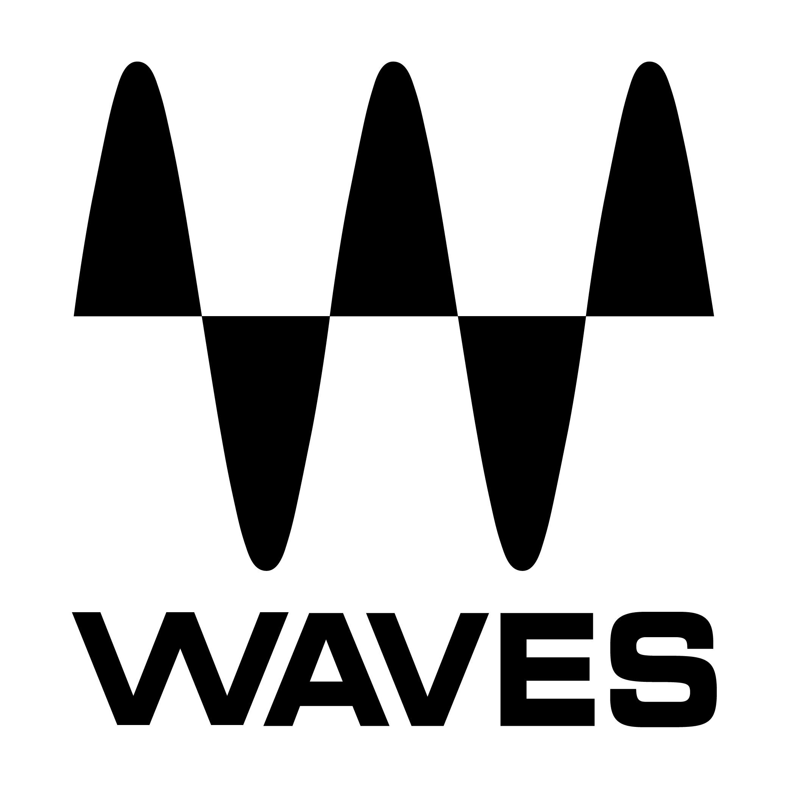
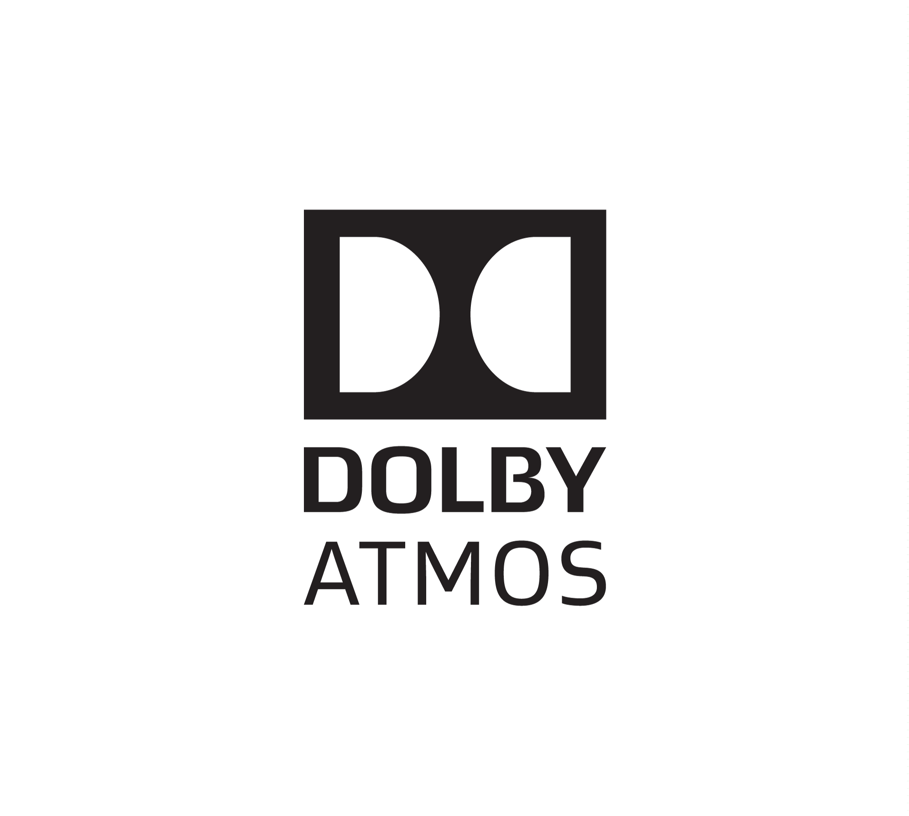
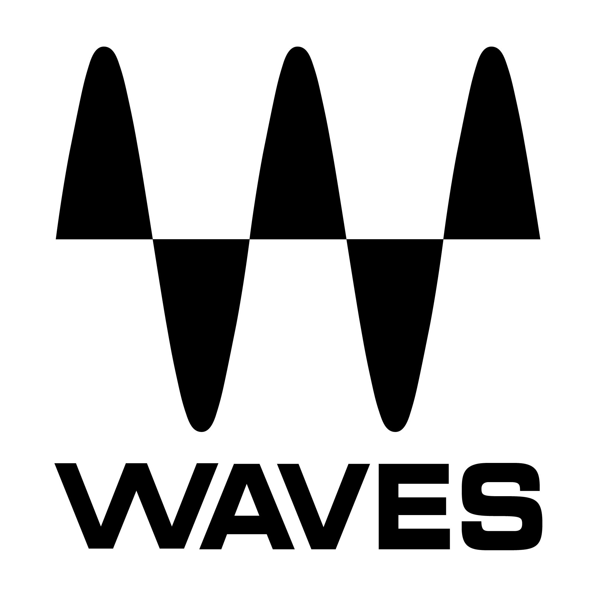
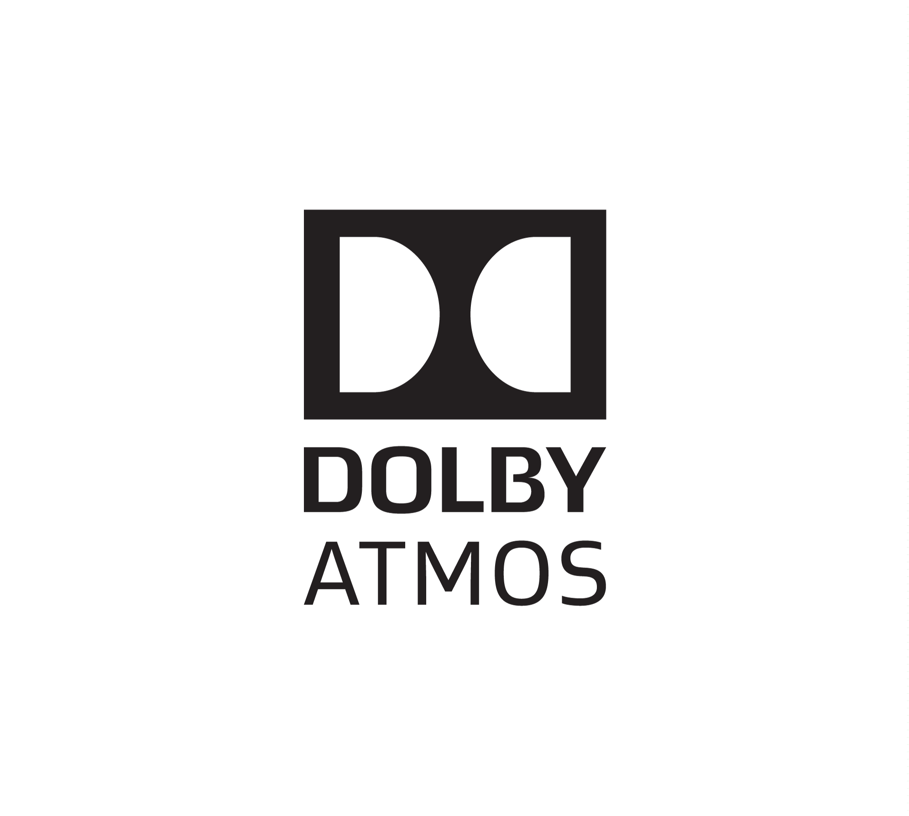

About me

Stefanos, born in 1998 in Thessaloniki, Greece. Passionate and experienced Sound Engineer with a solid foundation in Electrical and Computer Engineering. Holding a Master of Engineering degree from Aristotle University of Thessaloniki, where specialized in electronics, computer engineering, and electroacoustics.
Over the past 12 years, dedicated to the art and science of sound and audio, specializing in music production, audio mixing, and mastering. The journey has taken me from freelance music production, collaborating with diverse artists and labels, to working as a recording studio assistant at the Aristotle University of Thessaloniki. Honed my skills in recording, editing, mixing, and mastering audio in a professional studio environment.
 


